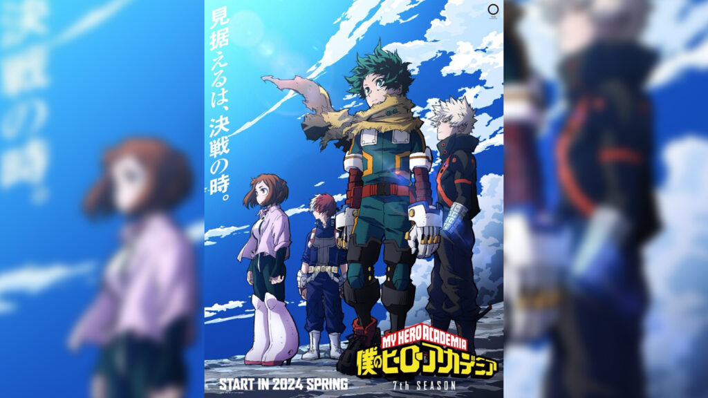
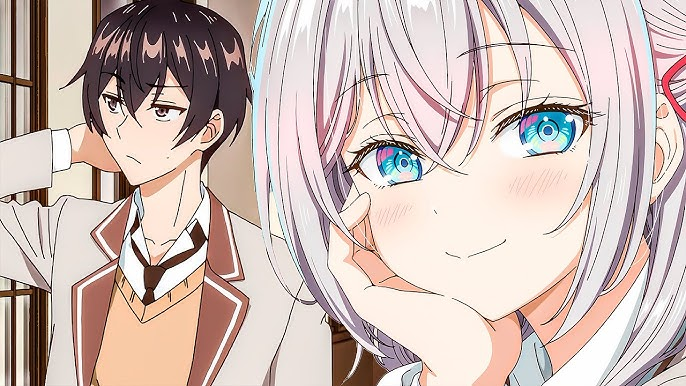
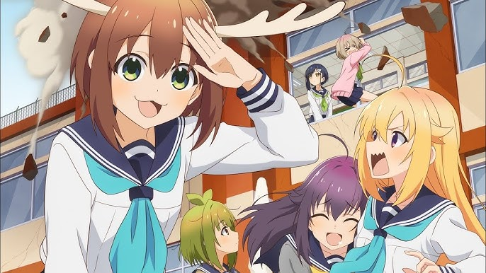
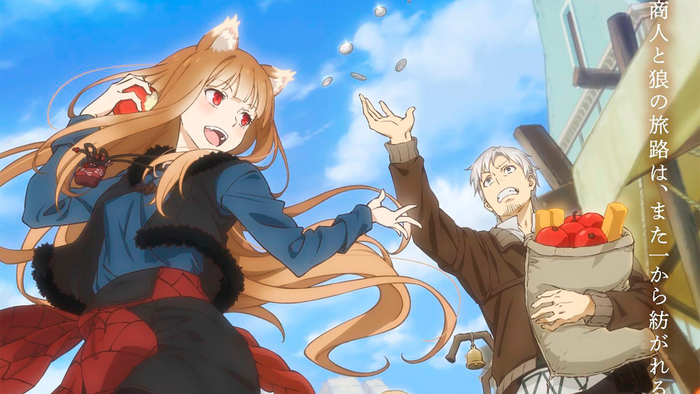
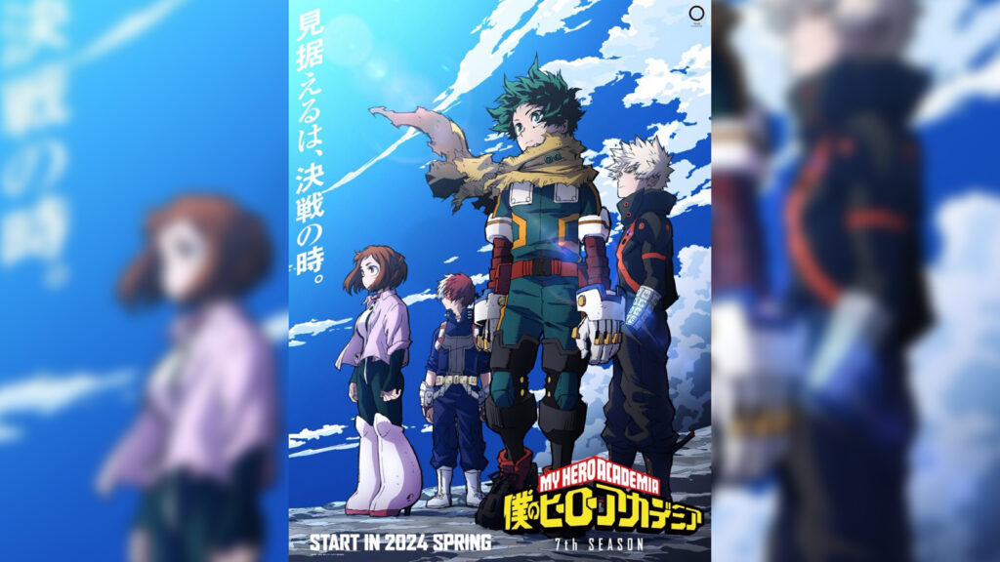
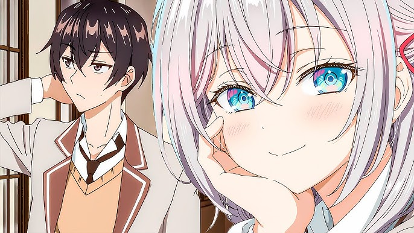
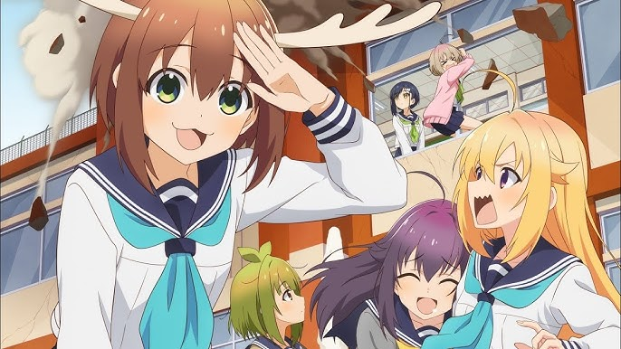
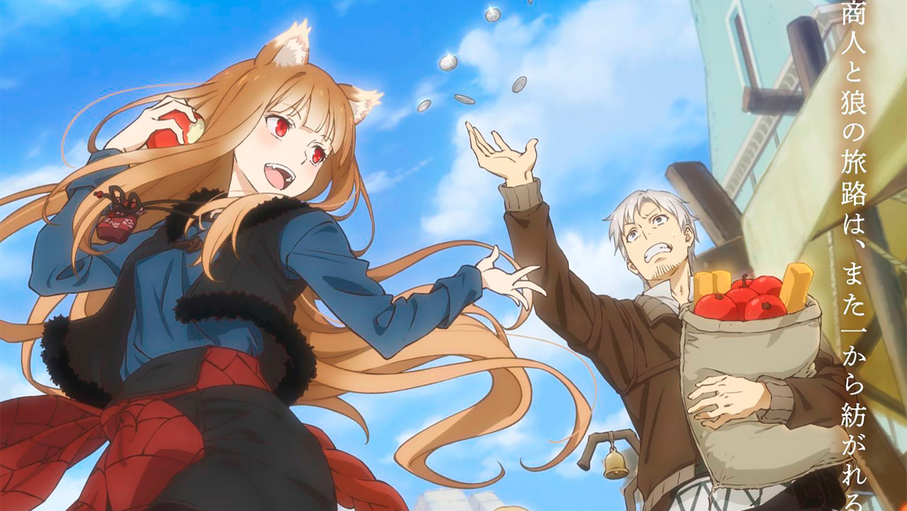

Oshi no ko Season 2
A doctor and his recently-deceased patient are reborn as twins to a famous Japanese musical idol. In this season, the twins gonna make all to get their dream come true.
Tensei shitara Slime Datta Ken Season 3
The series follows a man who is killed and reincarnated in another world as a slime named Rimuru. Now as a demon lord, he want to improve his nation as well, to make a country where humans and monster can live together.
Tower of God season 2
Make it to the top and all shall be yours, for there the universe awaits; to attain the universe is to attain divinity; such is the story of Rachel and Bam, a girl who reached for the stars and a boy who needed nothing more than her.
Boku no hero academia season 7
Set in a world where superpowers (called "Quirks") have become commonplace, the story follows Izuku Midoriya, a boy who was born without a Quirk but still dreams of becoming a superhero himself.
Tokidoki Bosotto Russia-go de Dereru Tonari no Alya-san
Alya does not realize that Masachika understands Russian, and her flirty comments in russian, her native language, towards him constantly leave him appalled, even though he also harbors secret feelings towards her that he refuses to admit.
Shikanoko Nokonoko Koshitantan
Torako Koshi, a second-year at Hino Minami High School, maintains a perfect student image to hide her delinquent past. Her life turns chaotic when she meets Noko Shikanoko, a transfer student who's actually a reindeer in human form.
Ookami to Koushinryou: Merchant Meets the Wise Wolf
Lawrence is a traveling merchant selling goods from a horse-drawn cart; he meets a girl named Holo the Wisewolf who wishes to return home, and offers to take her; the once-lonely merchant and once-lonely wisewolf begin their journey north.